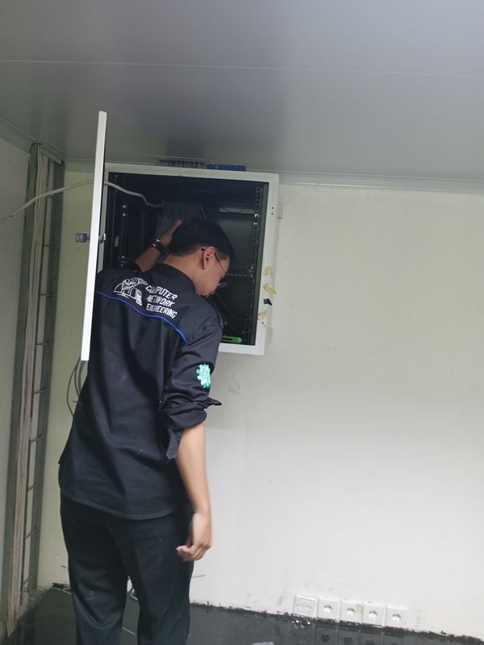
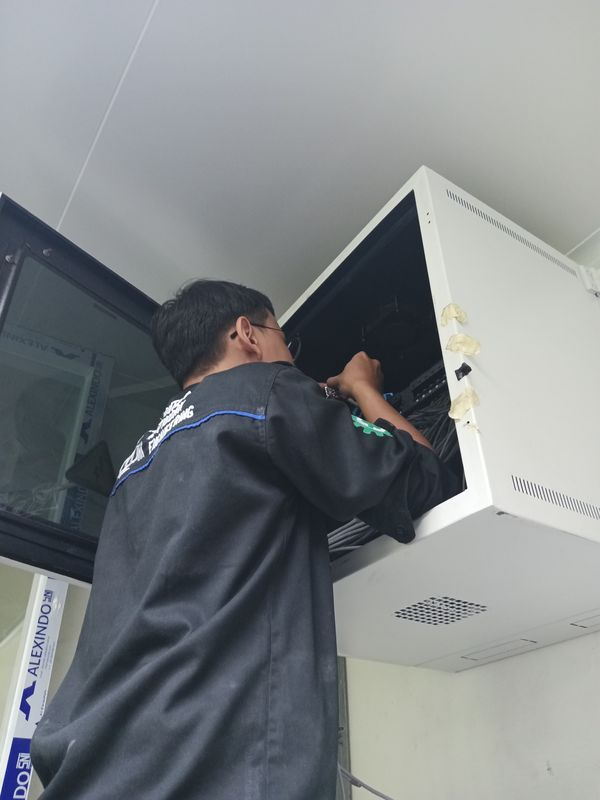

Reza Hakim Arafah
Infrastructure Engineer
Personal portfolio & infrastructure learning lab yang mengeksplorasi manajemen server Linux, networking, otomasi, Docker, dan arsitektur sistem secara praktis.
Session Status
- Status
- Learning in public
- Focus
- Linux · Docker · Python
- Base
- Bandung, ID
- Mode
- Infra lab — active

Welcome to InfraLab Interactive Shell v2.0
Initializing system lab environment... [OK]
